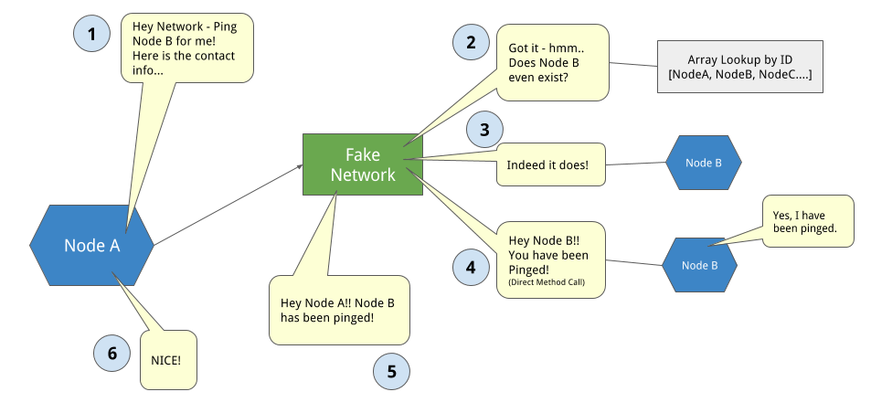

Xorro P2P is a mini BitTorrent peer-to-peer network built by a trio of developers.
As strictly end users of P2P systems like BitTorrent, there was a lot of research needed to understand what was going on under the hood of these systems.
[ADD MORE HERE]
Check out our resources section if you would like to see the information uncovered while doing research.
To talk about one of the earlier well-known P2P systems, we have to go back to the years 1999 - 2000 when Napster was very popular. For those of you who haven’t heard of it, Napster was a file sharing service that was mostly used to transfer music files. It’s estimated that there were about 80 million registered users at its peak.
Napster worked by having all nodes connect to a central index server that contained all the information about who was in possession of which files. If you wanted to search for a file, a query was sent to the central server and that server would return a list of matches. You would then retrieve the file from one of the matches.
Due to its centralized nature, Napster was vulnerable to attacks and lawsuits and Napster was shut down by court order after about 2 years of service.
In addition to those vulnerabilities, the central index meant there was a single point of failure, as well as a lack of scalability.
The next generation of P2P networks, such as BitTorrent, Gnutella and Freenet, are able to escape the same fate as Napster by moving to a distributed model.

In a decentralized system like BitTorrent, every computer or as we call it, node, acts as a client and server. Nodes can find out about the locations of files through other nodes, removing the reliance on a central server.
So as we set out to build Xorro, we spent a lot of time reading white papers about existing P2P systems and the underlying technologies they employed. Ultimately we zeroed in on this set of features found in BitTorrent as the model for the first version of our application.
First, we needed ways to discover peer nodes and how to route messages to them. A distributed hash table provides those capabilities, and Kademlia is the specific protocol that BitTorrent uses.
We also wanted to be able to shard files into smaller chunks, so that once a file has been distributed amongst peers, those peers can provide smaller pieces of the file when it is requested again, spreading the load.
The third feature is having our node act as both a client and a server, possessing the ability to communicate with other nodes in the network.
Before we get into the implementation details of Xorro P2P, check out this graphic that illustrates the file downloading process in action. The file shards are downloaded separately and then reassembled into the final file.

[Problem setup here: We selected Kademlia as the DHT to use; why did we choose Kademlia?]
The Kademlia protocol defines the structure of a network. We'll begin our explanation with a diagram of a Kademlia node to illustrate that structure.
The foundation of a Kademlia DHT is an abstract keyspace, which is a set of 160-bit numbers in the case of BitTorrent. Keyspace partitioning is the splitting of ownership amongst participating nodes. In practice, each node is assigned a random 160-bit string ID upon joining a network.
Each node also maintains a set of links to other nodes. Together these links form an overlay network. In our app, this set of links is referred to as the routing table. Each routing table is divided into buckets, with each bucket containing a list of contacts. Each contact contains information about a specific node, such as the ID, IP, and port.
Contacts are organized by closeness to a given ID. We'll talk about this in detail in upcoming sections.
A node also has a hash table that stores additional information. Because this is a file sharing application, the hash table will contain a file ID as the key and the location of the file as a value. This effectively makes the node a source for a file. We call the hash table a DHT segment in our application.
Another feature is consistent hashing, where we hash the file data to generate an ID that is the same format as the node ID.
How do we find peers or file in the network?
Here we take a real life example to help you understand how Kademlia do it. If you want to find a people you don't know, what will you do? Following is the step you might do:
It is very lucky if your friend know that people, what if they don't?
In general, the journey to find a target is not just one step, you have to do the process of searching more closer people over and over again to finally reach of the target. That's easy right? Kademlia is doing the same thing!!
The contact list in real life is the routing table in Kademlia, the meaning of closeness between the relationship in real life is the same with the closeness of nodes in Kademlia
Now there is the next problem comes, how is the closeness determined in the Kademlia?
Kademlia defines the distance between nodes as their bitwise exclusive or(XOR) interpreted as an integer. The basics of the xor operation is comparing two inputs and then outputs their difference where the input are the same, place a false(0 in bit) and where the input are different, place a true(1 in bit).
The diagram take our node id is 11 in the network bit-length = 4 for example.
In order to get the xor result, simply compare the numbers in bits individually and in order.
In first case, node id we compare with is 10, first three bits are same with our id and last bit is different gives us the result is 0001, and 1 in decimal
Next example 12, the first input is the same and the others are different, gives us the result is 7
Last node's id is 4, all bits are different, give us the result is 1111, 15 in decimal.
From these results you'll notice a important feature of a xor metric in Kademlia is:
If a node’s id shares more bit pre-fix with ours, the result is smaller, which means if we apply the xor operation to determine the closeness, the smaller result gives us the distance between these two node is closer.
Now that we’ve covered the basic structure and organization of the network, we’ll move onto node communications. What types of messages do nodes send to each other?
In Kademlia, there are four remote procedure calls. An RPC is a kind of request-response protocol that allows nodes to send messages to each other.
The first RPC is ping, which is used to verify that a node is still alive. If alive, both nodes insert contact info into their own routing tables.
The second RPC is find_node. The recipient node looks in its own routing table and returns the K contacts that are closest to the requesting node’s ID.
The third RPC is find_value. In this case, the query is a file ID. The receiving node looks in its own DHT segment hash and returns a URL if the key is found. If not, the recipient node returns a list of K contacts that are closest to the file ID.
The last RPC is store. This stores the key, value pair, which is the file ID and URL in our case, into the DHT segment of the recipient node.
Upon a successful communication for each RPC, both the sending and receiving node insert each other’s contact info into their routing tables, or update that contact’s last_seen property.
Earlier on this page, we mentioned that file sharding is a BitTorrent feature we wanted to include in our application.
The reasons for this include improved distribution and reliability. Multiple users store shards of the files so that if a node containing download information for a shard goes offline, the shard info can be retrieved from a different source.
File sharding also saves bandwidth, where the load of sharing potentially large files is distributed amongst many nodes.
Implementation-wise, upon upload a file is broken into smaller files called “pieces”. A manifest file is then created which keeps a record of all the pieces needed to reassemble a file.

When we upload a file, we create an ID for it by hashing the file’s content. This ID is also used as the filename for the manifest. Users don’t need to know about the manifest and can just search by the original file’s ID.
The .xro extension is added so that we can distinguish between manifest and shard files in our system.
Here we have the contents of a manifest which includes the original file name, the length of the file in bytes and an array containing all of the pieces in sequential order. The ID of each piece is generated by hashing the piece’s contents.
So.. how did we go about building and testing this?
In the early stages of our project, we needed to test inter-node communications, but all we had were our classes and test suites, there was no network, no RPC transport, not even multiple computers.
We could have had one node call methods directly on another node object, but this would have broken down quickly once a true network environment was introduced and those objects weren’t directly available.
We needed some sort of proxy object that would function one way during testing and local development, and another way when deployed onto a real network environment.
Our solution was to have individual nodes delegate all network communications to a pre-existing Network Adapter object.
When testing, this Network Adapter would actually be a ‘Fake Network Adapter’ -- essentially an array of other nodes, with some methods for lookup and RPC proxy. This allowed us to test our node interactions in a local sandbox without an RPC transport protocol.
The typical workflow would look something like the diagram below.

Our next step was to introduce HTTP as the underlying protocol upon which we built our RPC methods.
To do this, we implemented a Real Network Adapter object. It has the same interface as our Fake Network Adapter, but instead of looking up the recipient node by ID and calling the method directly, the Real Network Adapter crafts an HTTP Post request from the IP/Port listed in the contact info provided, and the route corresponding to the RPC call, possibly including relevant data in the request body -- contact info of the requester, query info, etc.
The typical workflow is similar to the previous slide:
As you can see, from the perspective of the Nodes, nothing has changed, each of them send and receive the same information, but the Network Object and HTTP endpoints abstract away the internode communications.
Once we knew that internode communications were working using HTTP in a local environment, or on a LAN, our next step was to deploy onto multiple systems across the internet. This worked fine if the systems were directly on the public internet, or if they were behind firewalls configured with ports already opened up.
Nodes behind a NAT firewall were another story. They could join the network fine and retrieve files fine, but without port forwarding, they cannot accept incoming http connections, and thus cannot contribute to the network.
Long term, a TCP based RPC transport is the goal, as well as support for STUN and TURN servers to handle public IP/port discovery and incoming connections, however, in the scope of this project, we needed a quick way to work around NAT and Firewalls.
To do this, we built support for Ngrok, a 3rd party tunneling service, so that nodes behind firewalls could be full functioning members of our network.
At this point we realized there were a number of different node configurations/environments that we needed to be able to support and test. Furthermore we needed a way to move between these configurations quicky and seamlessly
In each environment, a node broadcasts its IP/port, and the full url/path to each shard or manifest it hosts.
We identified a number of configuration variables that a node might have, and created environtment variables to represent these options. Our node instantiation code reacts to these environment variables, and we crafted a series of BASH scripts to standardize these configurations for each environment we were working in: test, local, lan, WAN, etc.
Our final system architecture looks like this:
The top level object is XorroNode, which is a modular Sinatra application
Each XorroNode contains: